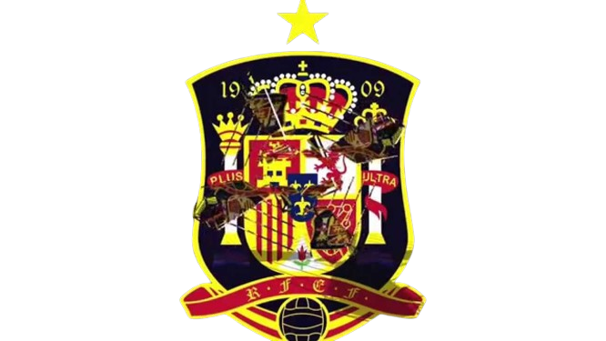

Real Madrid
Iker Casillas se formó íntegramente a nivel
futbolístico, en las categorías inferiores de Real Madrid, en
cuyo equipo prebenjamín comenzó a jugar en la temporada 1990/91.
Fue convocado por primera vez con el primer equipo, con apenas
16 años y perteneciendo al juvenil A, para el partido de Liga de
Campeones del 27 de noviembre de 1997, quinto partido en el
camino hacia «La Séptima», frente al Rosenborg en Noruega.
El Real Madrid se puso en contacto con el director del instituto
de Iker, para comunicarle su convocatoria, que vino motivada por
las bajas de Illgner y Contreras, siendo el portero titular en
aquel partido Santiago Cañizares.
La siguiente temporada 1998/99, formó parte de la plantilla del
Real Madrid C, segundo filial del club blanco y equipo de
Tercera División y fue convocado por la selección sub-20 con
solo 17 años, para disputar en abril el Mundial Juvenil de 1999,
en el que Iker fue uno de los baluartes para la consecución del
título.
Su debut en Primera División y como titular con el primer
equipo, se produjo en «La Catedral», San Mamés, el 12 de
septiembre de 1999, con resultado de 2-2 ante el Athletic Club.
En esa primera temporada 1999/2000, se convirtió además en el
portero más joven en jugar y ganar, una Final de Liga de
Campeones, al lograr «La Octava» para el club.A finales de ese
año 2000, recibió el Trofeo Bravo al mejor futbolista joven de
Europa.22
Porto
El 11 de julio del 2015 se hizo oficial su traspaso al F.C. Porto portugués, debutando en partido de competición oficial el 15 de agosto de 2015, con victoria ante el Vitória Guimarães en la Primeira Liga El día 1 de mayo de 2019 sufrió un infarto de miocardio durante el entrenamiento del F.C. Porto. El portero tuvo que ser hospitalizado, pero se recuperó sin problemas. Según los médicos, tenía obstruida la arteria coronaria derecha. Mientras se recuperaba de dicha dolencia pasó a formar parte del cuerpo técnico del equipo luso.

Seleccion española
Iker Casillas llegó a ser el jugador con más internacionalidades de la selección española, al superar en el Estadio de Wembley el 12 de noviembre de 2011 ante Inglaterra, los 126 partidos que disputó Andoni Zubizarreta. siendo superado por Sergio Ramos el 12 de octubre de 2019.Su debut como internacional absoluto fue el 3 de junio de 2000 en Gotemburgo, Suecia, en el partido amistoso previo a la Eurocopa 2000, Suecia 1-1 España.Posteriormente se produjo su debut en partido de competición oficial, el 2 de septiembre de 2000 en un Bosnia 1-2 España disputado en Sarajevo, de clasificación para el Mundial 2002.Con las categorías inferiores de la selección española fue campeón del Europeo sub-16 en 1997 y campeón del Mundial sub-20 de 1999 junto a Xavi Hernández,donde a pesar de comenzar como suplente del cancerbero Daniel Aranzubia, de mayor edad (20 años por los 17 de Iker) y experiencia, destacó por su actuación en cuartos de final, durante la tanda de penaltis ante el combinado de Ghana.